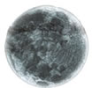
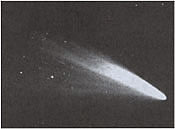

ALMANAC
1
LAST QUARTER MOON, 12:03 A.M. EDT (occurs 1, 2, or 3 hours earlier - thus on May 31- in the farther Western time zones).
2
Corpus Christi.
3
World Environment Day.
6
Venus at its highest in West-Northwest at dusk for several weeks around this time. The planet will remain visible in the evening until early autumn. It is the brightest point of light in the sky.
8
Venus 5° South of the star Pollux.
9
NEW MOON, 4:27 A.M. EDT; Muslim New Year (1415 A.H.) begins at sunset (if moon is seen at dusk).
11
Venus forms a line with Pollux and Castor tonight (Moon to lower left); King Kamehameha I Day in Hawaii.
12
Moon-Venus-Pollux-Castor line tonight.
14
Flag Day; earliest sunrise at 40° North latitude - 5:30 A.M. daylight saving time (4:30 A.M. standard time).
15
St. Vitus Day (rain today means rain for 30 days in a row). St. Vitus is supposed to have been put to death during the reign of Roman Emperor Diocletian; Vitus's help is invoked in cases of epilepsy and "St Vitus's Dance" (chorea).
16
FIRST QUARTER MOON, 3:56 P.M. EDT.
18
Saturn's rings most near edgeon for 1994 (just 5° from edge-on). To the naked eye, Saturn now appears as the brightest point of light rising in the East-Southeast around midnight or a little later.
19
Father's Day.
20
Venus in Northern part of Beehive star cluster this evening and tomorrow evening. Use binoculars to see the little collection of stars glittering near and about tremendously brighter Venus.
21
Summer Solstice, 10:49 A.M. EDT. This is the longest day of the year - the best combination of early sunrise and late sunset, though the very earliest sunrise and the very latest sunset occur about a week earlier and a week later, respectively, as seen from mid-Northern latitudes of Earth. The June solstice is also when the Sun rises and sets farthest North and passes higher in the United States sky at 12:00 P.M. than at any other time of year. Sun enters the astrological sign Cancer at the solstice. Sun enters constellation Gemini, 1 P.M. EDT.
23
FULL MOON (Rose Moon, Flower Moon, Strawberry Moon), 7:32 A.M. EDT - this is the lowest Full Moon of the year, because Full Moon is always opposite from the Sun in the sky and the Sun is now farthest North and at its highest. Midsummer's Eve (and St. John's Day).
24
Midsummer's Day (and St. John's Day).
28
Latest sunset at 40° North latitude (8:33 P.M. daylight saving time).
30
LAST QUARTER MOON (a second time this month in the Eastern time zone), 3:32 P.M. EDT.
1
Canada Day
2
Midpoint of the year (at noon - actually 1 P.M. daylight savings time - in your zone).
3
Dog Days begin according to one tradition, which says they end August 11; climax of the Battle of Gettysburg (1863).
4
Independence Day. This day in 1776 Thomas Jefferson reported that at 2 P.M. in Philadelphia it was cloudy with a temperature of - what else? - 76°F. Jefferson, Ben Franklin, and George Washington were all avid weather-watchers who took temperature readings almost every day for long periods of their lives.
5
Earth at aphelion (farthest from the Sun), 5 P.M. EDT. Since Earth's distance from the Sun doesn't vary too greatly, the amount by which one of its hemispheres is tilted toward the Sun is more important in determining weather. Right now the Northern hemisphere is tilted toward the Sun by almost its maximum so we get hot weather. Also, a pretty sight this morning, rather low in the East around 5 A.M.: the Moon just below Mars with the Pleiades star cluster above them and the star Aldebaran somewhat below them.
8
NEW MOON, 5:37 P.M. EDT.
10
Venus 1.1° North of the star Regulus - a fine conjunction, well up in the west at nightfall (the pair are fairly close to each other for several days).
11
Moon fairly near Venus and Regulus this night.
14
Neptune at opposition (nearest to us and brightest for the year-but you still need binoculars, country skies, and a detailed map, such as in the April issue of Sky & Telescope magazine); Bastille Day.
15
FIRST QUARTER MOON, 9:11 P.M. EDT; Moon passes very near the star Spica about 10 P.M. EDT; St. Swithin's Day.
16
Uranus at opposition (nearest to us and brightest for the year, but not greatly brighter than Neptune - see July 14 entry above - so same requirements are needed to see it). Mercury at greatest elongation in morning sky but quite low in the East-Northeast around 5 A.M.
A much easier sight than Uranus or Mercury is Jupiter. The second brightest planet after Venus, Jupiter is fairly near the Moon at nightfall. If you have a telescope, identify and observe Jupiter tonight, in preparation for the coming nights when pieces of a comet hit it.
18
Mars over 5° North of the star Aldebaran - look for them, Mars slightly slightly dimmer, fairly low in the East around 5 A.M. At nightfall turn a telescope on Jupiter in hopes of seeing effects from the impact of pieces of Comet Shoemaker-Levy 9 as they begin to hit. This series of impacts - which go on for approximately 6 days - may include a few blasts that will cause notable changes in the clouds of Jupiter and their brightest moons will be easy to see in any telescope. The impacts will all occur just over the edge on the far side of Jupiter, but their distortions of Jupiter's clouds may last many minutes, hours, days, months, or years!
20
Sun enters constellation Cancer.
22
FULL MOON (Thunder Moon, Hay Moon, Buck Moon), 4:15 P.M. EDT: Sun enters astrological sign Leo, 10 P.M. EDT.
23
Last pieces of Comet Shoemaker-Levy 9 hit Jupiter.
25
Twenty-fifth anniversary of Man's first steps on the Moon: Colonel Neil Armstrong and "Buzz" Aldrin of NASA's Apollo 11 mission.
30
LAST QUARTER MOON, 8:41 A.M. EDT.
31
Lammas Eve.
|
 |
|
|
|
 |
|
|